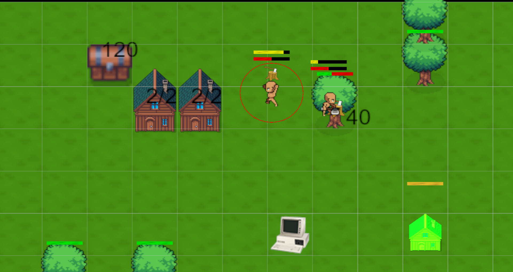
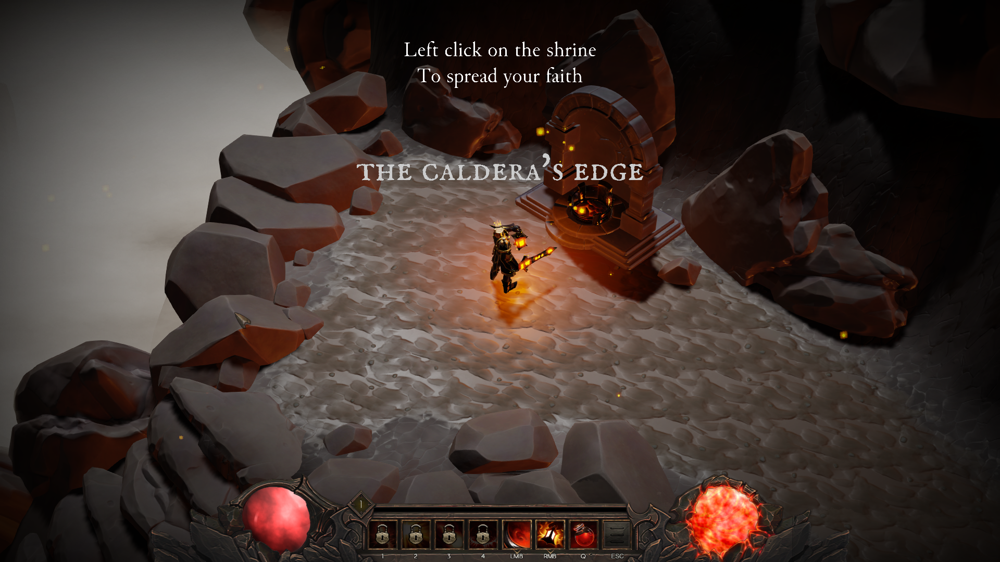
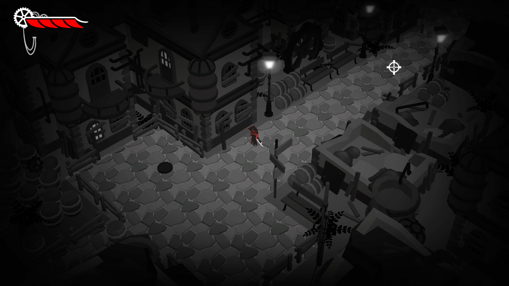
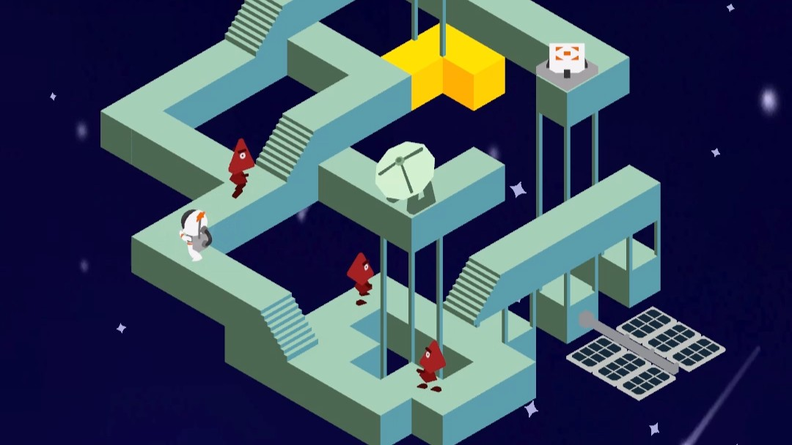
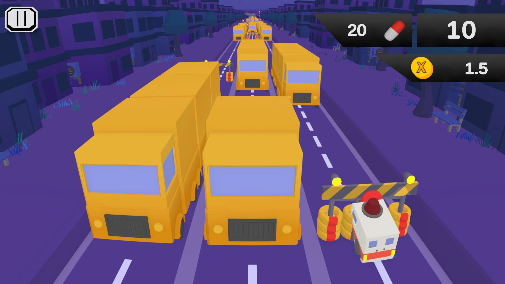

Specialization Project
Colony Simulation
A systems-focused AI simulation project built in a custom C++ engine, centered around NPC behavior, needs, schedules, and world interaction.
Gameplay programmer focused on systems, AI and player movement.
FOCUS
A selection of projects created during my studies at The Game Assembly, developed in collaboration with other students.

A third-person platformer where I focused on companion AI, behavior tree logic, and animation integration.

A Diablo-inspired action RPG built in our custom engine, where I worked on enemy AI, state machines, and gameplay systems.

A top-down action shooter where I worked on movement, controller support, HUD, and gameplay systems.

A dark action platformer where I worked on HUD, health and ammo systems, and gameplay features.

A puzzle game inspired by Monument Valley, where I implemented interactive platforms and gameplay interactions.

An endless runner built in Unity as my first team project, where I worked with audio systems and UI.
I am part of The Game Assembly’s internship program. As per the agreement between the Games Industry and The Game Assembly, neither student nor company may be in contact with one another regarding internships before April 15th. Any internship offers can be made on April 27th, at the earliest.